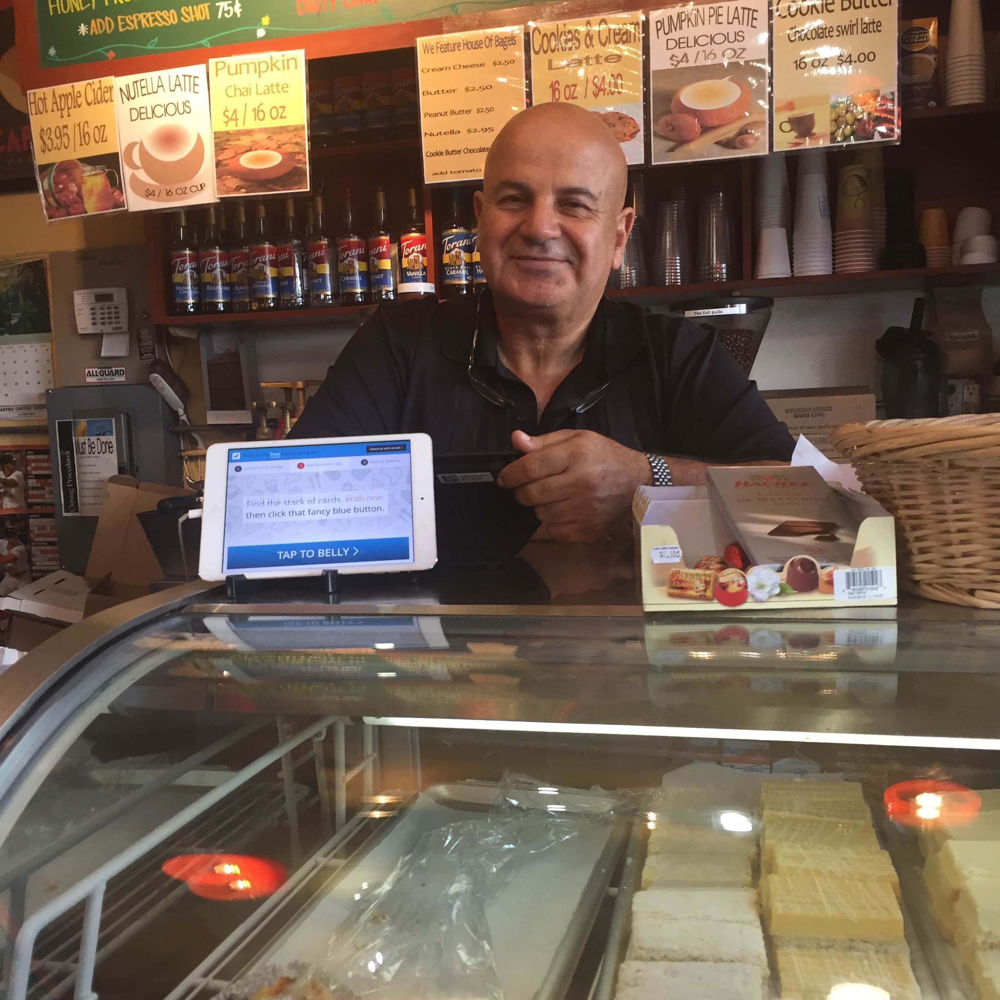
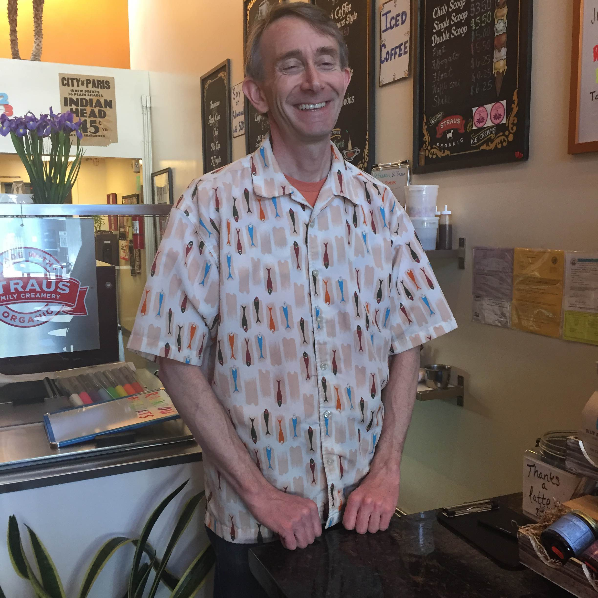

 The manager of the Castro Coffee Company believes that the increased amount of technology has been a good thing, as it increases the amount of sales and allows people to more easily gain rewards.

Bill Singleton, owner of Eureka! ice cream, believes that technology has made people anti-social in coffee shops. Though he has wifi in his shop, he believes people should socialize in cafes instead of paying sole attention to their computers.
The Castro is one of the most notable neighborhoods in San Francisco, due to it not only containing many shops and several landmarks, like the Castro Theatre, but also being one of the first LGBT communities ever in the United States.